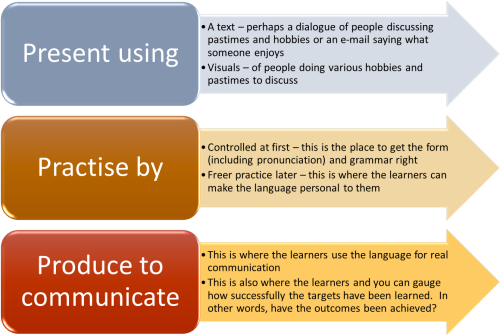
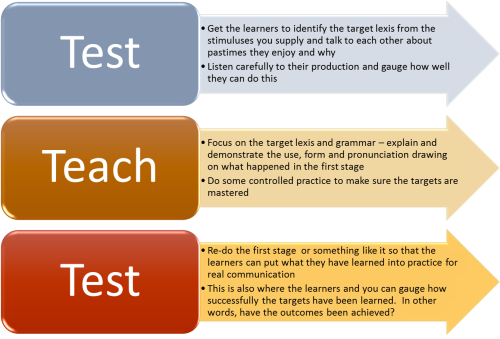

Teaching on your CELTA course

Nervous?Unless you are unusual and/or have a background in teaching, you are bound to be apprehensive when faced with teaching on the course, especially if it is your first lesson. Help is at hand. |
This guide has a sister called a CELTA teacher's toolkit which has some practical advice concerning how to conduct (and recognise) various stages of a lesson or teaching slot. It is linked here (new tab) and in the list of related links at the end.
 |
ObjectivesOn most CELTA courses, especially at the beginning, you
will be given the materials (or a choice of materials) that
you will use in your first teaching slots.
Usually, this will be a selection from a well-known coursebook or supplementary resource. Now you need to ask two questions: |
- What sort of lesson is this?
- This is usually straightforward. The focus will be on a structure (i.e. a piece of grammar), lexis (i.e., some new vocabulary) or a skill (i.e., listening, speaking, reading or writing). Usually, for your first lesson, it will be grammar or lexis.
- What is / are the objective(s)?
- This may already be given to you but the key idea is to
decide what the learners will be able to do at the end of the
teaching slot that they couldn't do at the beginning. If
you haven't been given an objective, try to write it out in
terms such as: By the end of this,
...
... the learners will be better able to talk about actions or states in progress in the past using, e.g., It was raining when I arrived.
... the learners will be able to recognise that the topic of a paragraph is usually stated in the first sentence and know to read it with the most attention.
... the learners will be able to talk about a range of hobbies and say why they enjoy them.
... the learners will be able to carry out a simple transaction concerning booking a hotel room, a restaurant table and arranging a meeting with a colleague.
and so on.
Make 100% sure that you focus on what the learners will be able to do, not on what you will teach. Keep this in front of you for the rest of this process and refer to it frequently.
 |
Planning 1: aims, objectives and backgroundOn most CELTA courses, the tutors will provide you with
an outline lesson plan in the form of a grid to fill in. Details will vary but the
essentials do not. Here's an example, filled in for a lesson on the language of hobbies and pastimes. |
| Name and dates etc. | Your name, the date of the lesson and the number of the teaching practice slot. | |
| Level: A2 | Lesson length: 30 minutes | Type of lesson: Lexis (pastimes and hobbies) |
| The learners: |
The class consists mostly of
Spanish speakers with one Italian speaker (who also has good
skills in Spanish). The learners are mostly in their 20s (with one exception) and are cooperative and well motivated. They are particularly keen to increase their vocabulary and enjoy speaking practice so this lesson will appeal to them. Add anything else you feel is relevant to the lesson and the materials here. |
|
| Lesson aims: | Main aim:
to increase the learners'
knowledge of the lexis of pastimes and hobbies Secondary aim: to give speaking practice in asking for and giving information about favourite pastimes and hobbies |
|
| Outcomes: | By the end of the lesson, the learners will be able to talk about a range of hobbies and say why they enjoy them using acceptable pronunciation of the target items and verbs such as like, love, be fond of + -ing form (gerund). | |
| Materials: | List the materials you have been given and any others that you have prepared and attach copies to the plan you give to your tutor. Make sure you say where they come from, i.e., reference them. | |
Depending on your centre's idiosyncrasies, there may be other sections on the plan, such as personal aims and so on that you need to fill in.
 |
Analysing the targetsIt is, or should be, fully obvious that you can't teach what you don't understand. This is true whether the target is a skills, a system of the language or a mixture of both. Here are some ideas about where to look and what to look for. |
- For a systems lesson
- In a lesson of this sort, you will probably be looking at a
grammar point and/or lexis. In the example we have used
above, the lexis will include items referring to pastimes and
hobbies such as cinema, film, chess, crosswords, bird
watching, reading, judo, sport etc. and the grammar will
focus on, e.g., the present simple tense followed by the -ing
form (here a gerund, arguably) in sentences such as I like
going fishing, I enjoy windsurfing, I love playing tennis, I'm
really fond of reading history etc.
Grammar and structure: Make sure, if you are given a section of a coursebook to teach, that you have looked carefully at what it says in the teacher's book and have consulted a grammar book, or this site, for an understanding of the language form.
Lexis: Consider how you will explain the lexis, its word class and its pronunciation. Look, too, at collocation (words which routinely occur together) and make sure you focus on, e.g., go + fishing, do + judo, play + chess etc.
For more help, look at the A-Z index of topics and use the search facility on this site. - For a skills lesson
- You need to understand the basics of the skill you are teaching in general as well as knowing what the subskill is. For more help here, go to the guides to understanding and teaching the skills in the initial plus training section of this site.
Remember:
- you can neither plan nor teach a lesson on what you don't understand
- your students will quickly notice if you are unclear or unsure and respond negatively to your teaching
 |
Planning 2: procedures and lesson shapeMost CELTA courses will not provide you with a
stage-by-stage set of procedures to follow, although many
will suggest something, especially at the beginning. At this stage in your training, you don't need to be too
innovative and exciting in terms of the procedures but you
do need an overall shape for your lesson. |
You can take two routes:
- Route 1: Present, Practise, Produce
- This is the most familiar and popular shape to a lesson so
is probably the preferred option, particularly for your first teaching slot.
It looks like this:
 - Route 2: Test, Teach, Test
- This is slightly less common but useful especially when you
are not sure of the learners' abilities in the target area(s).
It looks like this:

There is a fuller guide to structuring lessons that you might like to look at linked in the list of related guides at the end.
 |
Planning 3: The nuts and bolts – tasks and activitiesThis is not the time to cover all the possible types of
tasks and activities you can insert into the lesson to
bridge the gap between the materials and the objectives they
are used to achieve. |
There are two guides on this site that are particularly helpful in selecting and designing tasks and activities when planning a lesson. Both guides will open in a new tab:
- The
guide to activity types. This guide covers the
concepts of three kinds of activity:
- awareness-raising activities
- skills-getting activities
- skills-using activities
- The
guide to task types focuses on specific task types and
covers, with examples:
- matching tasks
- gap-fill tasks
- role-play tasks
- skeleton tasks
- listing and prioritising tasks
- discussion and debate tasks
- transformation and transfer tasks
- information and information-gap tasks
Following those two guides carefully at the start of a CELTA course will pay dividends because they help you to understand what classroom tasks are for and how to select and design them to meet objectives.
 |
ResourcesThis refers to the equipment and aids that you may have to hand in the classroom. You should not, of course, use an aid simply because it is there but because it contributes something positive to how the classroom is managed and how information is presented There is a fuller guide to ten resources on this site which you can go to by clicking here (new tab). What follows is an abbreviation, focused on six of them. |
Here's the list of six types of aid you may want to use with some suggestions of what they are good for and what they are not so good for.
- Boards (black, white or even green)

- are good for:
- emphasis and focus. Most learners will write whatever you write on the board so make sure what you write is relevant and important.
- short texts: anything longer than a sentence or two should be projected or on a handout.
- organising learning and data: try to keep separate parts of a board for separate ideas and use a consistent colour-coding system so people know where to look for what.
- building up ideas step by step: boards are useful for leading people through a process because they can hear and see how things slowly develop.
- learner input: because of their familiarity and low-tech nature, boards are easy for nearly all learners to use and that gives them some control and input in the lesson.
- are not good for:
- being used as notepads: the relevance of what you write this way will not be clear.
- long texts: it is deeply boring to watch someone writing on a board for more than about 30 seconds. Don't present texts this way.
- are good for:
- Data projectors (and Smart boards)

- are good for:
- giving feedback: if you have used a text-based activity, it is simple and well focused to use a projected image of the text to give feedback and correction.
- focus: projected images and texts make sure everyone is looking at the same thing at the same time. Unlike paper-based materials which people can use as they please and focus where they like, projected texts and images oblige everyone to be looking at the same thing as everyone else.
- presenting images: you can show people hand-held images by walking around or giving everyone a copy but a projected image is far more efficient and time economical (and saves paper, time and ink).
- prepared materials: you can prepare your materials in advance and project them when you need. That way, you reduce the load on yourself and can focus better on the learners.
- projecting students' work: it is often motivating and interesting for people to see their own work as a projected image.
- are not good for:
- very long texts: many people find it tiring to read long texts on screen. Paper versions are often better.
- individualising: because everyone sees the same thing, it is difficult to individualise input or feedback by using projected data.
- are good for:
- Smart phones

- are good for:
- project and data-gathering tasks: smart phones, well used, are idea for recording data and images.
- training: many smart phones have built-in translation applications. Learners need to be taught how to exploit them and not to accept what they are told uncritically.
- are not good for:
- getting high-quality recordings: something recorded on a smartphone is unlikely to be of good enough quality for broadcasting to the whole room.
- are good for:
- Audio and video equipment

- is good for:
- making high-quality recordings: equipment capable of recording in near-broadcast quality is now comparatively affordable and many schools have such equipment.
- recording learners: although some learners may freeze when they know they are being recorded, many find it a motivating experience and work hard to get things right. They may well ask for another attempt if they are dissatisfied with their first efforts.
- is not good for:
- spontaneous events: you need time and practice to be able to use this sort of equipment effectively. It is not a good idea to use it without careful planning and some practice.
- is good for:
- Realia (real objects, texts, images etc.
brought in to the classroom)

- are good for:
- real texts: it is motivating and interesting for learners to see something that has been written for a purpose they can recognise as a real-world one.
- objects: you can ask learners to bring objects that are personal to them to talk about and discuss. You can also bring real objects into the room to illustrate ideas and teach lexis.
- are not good for:
- unplanned activities: you are unlikely to have what you need to hand. Plan.
- are good for:
- The Web

- is good for:
- getting learners to do some pre-lesson or post-lesson research.
- resources: there are, quite literally, billions of texts and images on the web. You are reading one. Finding what you want is the trick!
- lesson ideas: there are thousands of lessons posted on hundreds of websites (even this one has some).
- is not good for:
- whole-class use individually or in groups: unless you project the screen, you will find that learners quickly go off topic if they are all using the web at the same time. If groups of more than two try to use a single terminal, someone won't be able to see and someone will dominate by controlling the keyboard and mouse.
- uncritical lesson planning: the web may have thousands of lesson ideas to choose from but many of them are poorly designed, inaccurate or confusing. Be very careful.
- is good for:
 |
Teaching the lessonHere you are on your own. It's your lesson and yours to deliver in the most effective way you can. Good lessons are:
|
Keep these three points in mind as you plan and teach.
Whichever structure you have settled on for your lesson, the following will apply.
- Don't be a stranger!
-

Smile, be approachable and start with something about yourself. Make sure the learners know your name, where you come from and something personally relevant to the lesson. What are your favourite hobbies and pastimes? - Be clear!
-

Make sure you use language which is comprehensible for these learners as well as being concise and clear when you explain and give instructions. Check that you have been understood.
Do not be tempted to think that pidgin English is easier to understand than natural (though suitably slower) production. It isn't:
What do you enjoy doing at the weekends?
is clearer and provides a better model than:
What you like ... weekends ... what you do?
Give clear, polite instructions and do not be tempted to say something like:
Now what I would like you to do is look at this text and see if you can find the verbs that the speaker used on the video.
or
Now would you like to see if you can find the verbs in this text that the speaker used on the video?
but prefer:
Right, now look at this text, please. Find the words the speaker used in the video.
For more, see the guide to being clear (linked below). - Be orderly!
-

All lessons need some form of introduction so that the learners are aware of the topic and what they will achieve. An introduction serves two purposes:
a) it allows the students to engage with what will follow and use their own resources to help in achieving the objectives.
b) it does something called activating a schema (plural schemata) which means that the learners are able to draw on their knowledge of the world to understand the language. In our example, all the learners will be aware of what things like chess, judo, windsurfing etc. are (but they may not know how to say them in English) and all the learners will be familiar with the idea of expressing to others what they like and don't like.
You planned carefully bearing in mind the need to be logical and purposeful in what you do. Don't suddenly depart from the plan and bring in confusing and unnecessary stages. Each stage should build on what came before.
Equally, if something is taking longer because the learners need a bit more time to get it right, do not be afraid to allow that time. If it's important, then the next stage will depend on it. - Keep your eye on the clock!
-

Nobody expects your timing to be perfect at this stage of the course (or, probably, ever) but don't allow the time to slip by when you should be getting on to the next stage.
Be firm, loud and assertive about stopping people or time limiting tasks by saying, e.g.:
OK! That's fine. Please stop now.
Right! Stop and we'll move on now. - Group learners appropriately
-

- There is a guide to how to do that on this site (linked below). Never be afraid to take the time to make sure that the way people are sitting or standing helps rather than hinders them. Sitting three or four in a row, for example, does not allow people to discuss anything or work together on a task.
- Know where you should be and what you should be doing
- This sounds obvious enough but
If you are giving whole-class instructions, be where everyone can see you and on your feet.
If you aren't needed, sit out and be still.
If you want to discuss things and get your learners' feedback, sit down and listen. - Handling error appropriately
- You need to know now how you will react to the mistakes that
the learners will inevitably make. The behaviour to avoid
is simply saying something like:
No that's wrong and it should be ...
There are many more useful and imaginative ways to handle error in the classroom. If you would like to learn about them, follow the link to correcting learners in the table of related guides at the end. - Treat your learners with respect
-

Obviously, but there are some messages you can send unintentionally which may affect how learners feel and how they think you feel about them.
Here are some things to avoid:- not telling people what's going on
at the beginning of your teaching slot, tell people what they will be learning and why. If you don't do this you disempower them and make them feel that they are being led by the nose. Keep it simple and clear, along the lines of:
In this lesson you are going to learn some important nouns and verbs to do with booking a trip
If you are using a reading or listening text, tell people what's it's about before you start.
See above on introducing lessons. - standing over people
When you are talking one-to-one or to a small group of learners, try not to stand if they are sitting. Looking down on people diminishes them. Get a chair and sit with them or squat or kneel by them. - distracting people
If your role is purely monitoring and not getting involved get behind people rather than standing in their eye lines.
If you have set a time limit for an activity, don't count down. Warning people once only that they have, say, a minute left is fine. Anything else distracts and frustrates.
If you want the class to read silently, watch a video clip or listen to a recoding, sit still and be quiet.
Don't stand between people and what you want them to look at. - relying on the stronger students
It's tempting to use stronger or more outspoken learners to do some of the work for you because they will usually be able to answer your questions and provide instant feedback. Doing this means you aren't giving all the learners equal opportunities. Be patient and encouraging with quieter and weaker students. It's only fair. - pointing at people
is aggressive and appears that way, whatever your intention. Use names whenever you want to nominate. If you can't remember or don't know a learner's name, use an open-hand gesture which invites a contribution rather than pointing:this: not this: 
- failing to value students' ideas
No matter how short and activity or task has been, take a moment to thank people for doing it and get some feedback from it. The feedback you get may not be important pedagogically but getting it values what people have done. - using weasel words
Learners value politeness and consideration but they also want straight answers to straight questions. Don't correct errors or answer questions with something like:
Well, that's not quite right and I wouldn't say it that way
and prefer:
No, that's wrong. You need to say ...
You can do this politely and sensitively. One sign of sensitivity and respect is telling people the truth. - rushing people
People usually need time to think and this is especially the case when working in a foreign language. Yes, you know the answer but don't jump in with it. It's called wait time and you should use it.
Do not give unnecessary or unrealistic time limits.
Ask before you clean things off the whiteboard. People may still be trying to write it down. - asking the unanswerable
Avoid asking questions such as:
What do we call the thing we use to close the door?
because, although you may be looking for the word key, your learner may be struggling to find the word bolt, handle or knob in English.
Avoid, too:
What does machine mean?
because that's simple unanswerable for most learners (and most speakers of the language).
If you show a picture of something to elicit some vocabulary, make sure it's possible to do this from the prompt. For example, showing this:

and asking:
What's this?
will elicit anything from:
A street
A village
A town
A woman
A road
Some houses
It looks like my friend Maria
to a good deal more. Doing this simply increases your learners' sense of helplessness because they cannot know what it is you want.
However, showing, e.g.:
and asking:
What's this?
is unlikely to elicit anything but chair.
And asking:
What's strange about this?
is also likely to get only one sort of answer. - expecting too much
If you are focused on grammar, try not to ask a question like:
Can you put the verb conceal in a sentence?
because that involves too many thought processes (it may be called cognitive overload).
Firstly, the learner needs to feel sure of the meaning of the verb.
Secondly, the learner has to know a good deal about the verb (whether it takes and object, whether it's regular and so on).
Thirdly, the learner needs to produce a suitable subject for the verb.
Fourthly, the learner has to invent a plausible sentence using the verb.
If you do this kind of thing, do not be too surprised if a learner suggests:
The dog concealed from the cat.
(especially if you have been unwise enough to suggest that conceal is a synonym for hide). - guessing when you don't know
You are not an experienced teacher. You know this, your tutors know this and, importantly, the learners know this.
If you are asked a question such as:
What's the difference between I used to go and I would go?
do not be afraid to say
I'm not sure. I'll check it and get back to you
because that's better than telling someone something that isn't true.
- not telling people what's going on
- Use instruction- and concept-checking questions
- You are going to hear a lot about these on a CELTA course
and many people struggle to get the hang of them.
Instruction-checking questions are essential to make sure that people understand what they have to do and how they have to do it.
Concept-checking questions are essential to making sure people have grasped the essence of what you are teaching before you dare move on.
There is a dedicated guide on this site to what they are, how to write them and how to use them, linked below. It will repay half an hour of your time. - Forget the notes
-

There is a temptation for all teachers when they are being observed to rely on a blow-by-blow lesson plan to which they can refer as the lesson goes on.
Most people will have a set of brief notes (not the full plan) available as a reassurance. Try not to need it.
There are five good reasons for avoiding this:- It distracts you.
- It encumbers you with a piece of paper in your hand or it means you have to keep returning to your desk / table to check the notes.
- It gives the impression that you are reading from a script and that reduces your learners' confidence. Learners expect their teachers to be knowledgeable and constantly referring to notes creates a credibility gap.
- It implies that you haven't properly prepared and thought through the plan.
- While you are checking your lesson plan notes, you lose contact with the class and you can't see what's happening.
Here's how to do that by visualising the lesson:

- Sit down with your plan and read through the procedure.
Then put it out of sight and see if you can recite the stages of
the lesson and what happens at each stage. Think of it as a
narrative rather than a set of stages and it'll be easier to
recall the sequence of events.
If you can't, read and re-read the procedure until you can do this easily. - Now, shut your eyes and imagine what you will say.
Think about:
- how you will begin
- how you will set the scene
- how you will present your target
- what examples you will give
- how you will start the first activity
- how you will stop the activity
- how you will get and give feedback
- how you will signal that activities are finished and you are moving on
- Now, find somewhere comfortable to sit or lie and, with
your eyes closed, visualise the whole lesson from start to
finish. In particular focus on:
- what you will say
- where you will be in the room
- what you will be doing
- what the learners will be doing
There is also a guide to using visualisation in the classroom (in the in-service section but not too technical).
 |
Being observed and assessedIn most jobs, people are observed all the time. If
you go into a shop, you are observing the behaviour of the
person who serves you, if you take a cab or a bus, you are
observing the driver's skill, if you are reporting a crime
or being arrested,
you are observing the police officer's reactions and so on. |
It is easy to say this but the most important thing to remember
is that your focus should be on the learners, not yourself or your
observers. Try to ignore them and, when you are observing
colleagues, make sure you are immobile, silent and fully ignorable
yourself.
Avoid, whenever possible, making eye contact with anyone in the room
except the learners. They are the most important people.
 |
Dealing with feedbackFeedback is, of course, valuable but some comments are more valuable than others. Don't simply believe what you hear, especially from your peers, but think critically about what has been said. |
- Before the feedback
- Make sure you have thought carefully about the teaching you
did, considering both the good and the bad points and the reasons
for them. What effect did these issues have on the
learning that took place?
Look again at the list of things to avoid doing in the classroom (above) and ask yourself if you were guilty of doing any of them and why. - During feedback
- Listen and take notes but, at this stage, do not focus on
rebutting any criticisms. In other words, do not be
thinking
Yes, but ...
but rather
OK. That's a point worth thinking about. - After feedback and before you teach again
- Re-write your notes and prioritise what you see as the most important strengths and weaknesses. Address the weaknesses and build on the strengths.
 |
More help |
| On this site, you will find: | |
| the CELTA teacher's toolkit | this is a set of practical guides to how to behave in the classroom. |
| meeting the CELTA teaching criteria | this is Syllabus area 5 of the CELTA scheme |
| materials for teachers | for help with designing lessons and tasks, including a lesson plan with materials for the example lesson focus discussed on this page (new tab) |
| structuring lessons | for a bit more on how to make sure a lesson has a logical progression |
| being clear | for more on ways to make teacher talk clear and efficient |
| checking questions | for the guide to instruction- and concept-checking questions |
| grouping learners | a guide to matching the way people are grouped to what they have to do |
| correcting learners | for a guide to some techniques to think about now |
| the initial plus index | These links will help you find guides to all the areas of language and skills that you are likely to meet on a CELTA course. |
| the A-Z training index | |
| the search page | |
| a lesson-planning visualisation exercise | this is the guide in the Delta section which is described above (new tab) |
| the CELTA index |